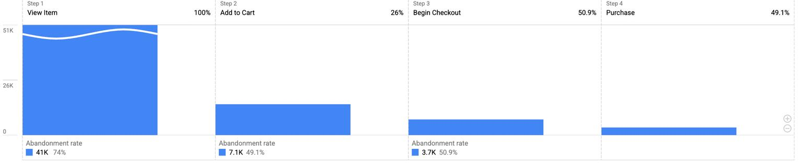
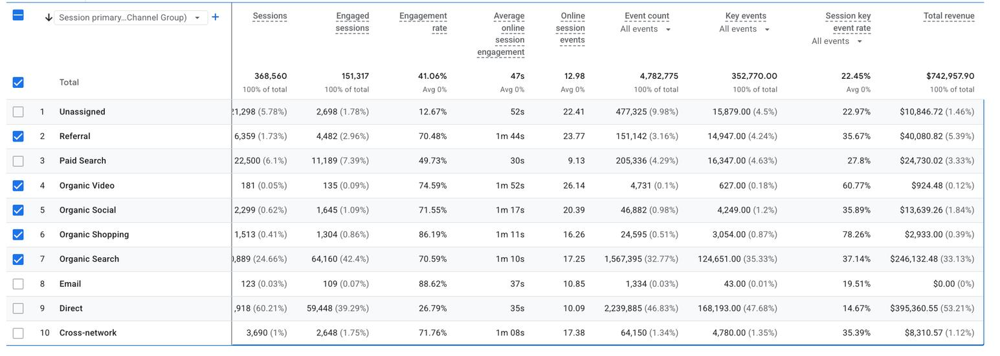
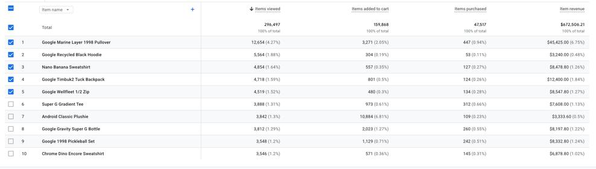

Daily Channel Records
STRATEGY,
DIGITAL & CREATIVE PROJECTS
MARKETING ANALYTICS
1. SEPHORA | SKINCARE CAMPAIGN ANALYTICS
Independent Spec Project · Marketing Analytics
Project Overview
Developed an interactive marketing performance dashboard using Google Looker Studio to analyze 90 days of simulated campaign data across Google Search, Meta Ads, Email, and Organic Social. The project focuses on campaign performance measurement, channel efficiency, conversion trends, and data-informed marketing recommendations.
Marketing Channels
Days of Campaign Analysis
Key Insights
Channel Efficiency: Google Search achieved a lower tracked cost per conversion ($16.09) than Meta Ads ($27.52). Conversion Performance: The simulated campaign generated 1,078 conversions, with an overall conversion rate of 3.19%. Strategic Opportunity: Identified opportunities to test budget allocation across paid channels while monitoring conversion quality and efficiency.
Tools & Skills
Google Looker Studio · Google Sheets Skills: Marketing Analytics · Data Visualization · Campaign Performance Analysis · KPI Reporting · Channel Optimization
Independent spec project. All campaign data is simulated. Not affiliated with Sephora.

2. GOOGLE MERCHANDISE STORE
GA4 | E-Commerce Conversion Analysis
Google Analytics 4 · Customer Behaviour · Funnel Analysis · Conversion Optimization
Turning customer behaviour data into actionable marketing insights. Conducted an independent e-commerce performance analysis using Google Analytics 4 demo data from the Google Merchandise Store. Configured a custom four-step purchase funnel, evaluated traffic acquisition and product performance, and compared conversion behaviour across devices to identify opportunities for improving the online shopping experience. My Focus: Traffic Analysis · Purchase Funnel · Product Performance · Conversion Optimization
Purchase Funnel Analysis
Understanding where customers drop off in the purchase journey. Built a custom GA4 Funnel Exploration to track users through four key stages of the shopping journey. VIEW ITEM → ADD TO CART → BEGIN CHECKOUT → PURCHASE Overall Funnel Completion: 6.5% Analysis Only 6.5% of users who entered the defined funnel reached the purchase stage. The largest drop-off occurred between product views and add-to-cart actions, highlighting an opportunity to investigate product-page effectiveness.

| Funnel Stage | Active Users | % of Initial Users |
|---|---|---|
| Product View | 55,235 | 100% |
| Add to Cart | 14,361 | 26.00% |
| Begin Checkout | 7,310 | 13.20% |
| Purchase | 3,588 | 6.50% |
Key Performance Insights
74% Product View Drop-off
74% of users who viewed a product did not progress to the add-to-cart stage within the configured funnel.
Opportunity: Evaluate product-page content, pricing visibility, and add-to-cart placement.
9.32% vs. 1.62%
Desktop vs. Mobile Funnel Completion
Desktop users completed the purchase funnel at 9.32%, compared with 1.62% on mobile.
Opportunity: Prioritize mobile shopping experience audits and investigate device-specific conversion barriers.
50.9% Checkout Abandonment
50.9% of users who began checkout did not progress to purchase within the configured funnel.
Opportunity: Investigate checkout complexity, payment experience, and potential friction points.
Traffic Acquisition Analysis
Evaluating traffic quality beyond session volume. Analyzed acquisition channels to understand how traffic sources contribute to engagement and e-commerce revenue.
Direct Traffic
Generated 60.2% of total sessions and approximately 53.2% of revenue, but recorded a relatively low engagement rate of 26.79%.
Organic Search
Contributed 24.7% of sessions and approximately 33.1% of revenue, with a stronger engagement rate of 70.59%.
Referral Traffic
Recorded a 70.48% engagement rate and an average engagement time of 1 minute 44 seconds, indicating comparatively strong engagement despite lower traffic volume.
Marketing Insight
Organic Search demonstrated strong engagement and revenue contribution relative to its traffic share, making it a valuable channel for further SEO and content performance analysis.

Product Performance Analysis
Identifying product-level performance opportunities.
Key Findings
$45,425 Revenue generated by Google Marine Layer 1998 Pullover, the highest-revenue product among the displayed items. 447 Units purchased for Google Marine Layer 1998 Pullover. 10,884 vs. 109 Add-to-cart events versus items purchased for Android Classic Plushie, highlighting an unusual difference that warrants further investigation.
Marketing Insight
Product-level engagement and purchasing patterns can help identify opportunities to improve merchandising, product presentation, and conversion tracking accuracy.


Strategic Recommendations
From data to marketing action. Based on the analysis, I identified three priority areas for further investigation and optimization.
01. Optimize Mobile Product Experience
Audit mobile product pages, including page speed, product information, navigation, and add-to-cart visibility. Test improvements to reduce friction in the shopping journey.
02. Investigate Checkout Abandonment
Review checkout steps, shipping-cost visibility, payment options, and usability to identify potential barriers preventing customers from completing purchases.
03. Strengthen Product & Channel Performance
Investigate products with unusual add-to-cart activity, validate event tracking, and evaluate opportunities to improve organic search performance and product-page engagement.
Tools & Skills
TOOLS
Google Analytics 4 (GA4) · Funnel Exploration · E-commerce Reporting
SKILLS DEMONSTRATED
Marketing Analytics · Customer Behaviour Analysis · Conversion Funnel Analysis · Traffic Acquisition · Data Interpretation · Conversion Rate Optimization
PROJECT DISCLAIMER
Independent portfolio case study using Google Analytics demo data from the Google Merchandise Store. Analysis and recommendations are for educational and demonstration purposes. Not affiliated with or endorsed by Google.